又发现一个本地语音克隆神器，开源了。
ElevenLabs在 2023年的爆火，说明了AI语音合成的需求是很旺盛的。
大家都渴望着能用自己的声音生成配音，或者克隆某个喜欢的音色，于是纷纷选择订阅各种在线服务。
当多数人兴致勃勃想搞 AI 配音时，现实是这样的。
大部分在线服务基本的套路，要把自己的数据传到云端，还要出订阅费，每个月几十美元。你的声音样本、训练好的模型，全锁在别人的服务器上。哪天服务涨了价，或者干脆关了，你什么也带不走。
也有人折腾开源方案，但折腾一圈下来，发现大部分工具的体验还停留在命令行敲一敲，能出声就行的阶段。
想做个多角色的对话？想给生成的语音加个混响？想用不同引擎对比一下效果？对不起，你得自己拼。
最近刷到一个名为 Voicebox 的项目在 GitHub 上开源，其采用的本地化语音克隆方案，让每个人都能在自己的电脑上完成专业级配音制作。
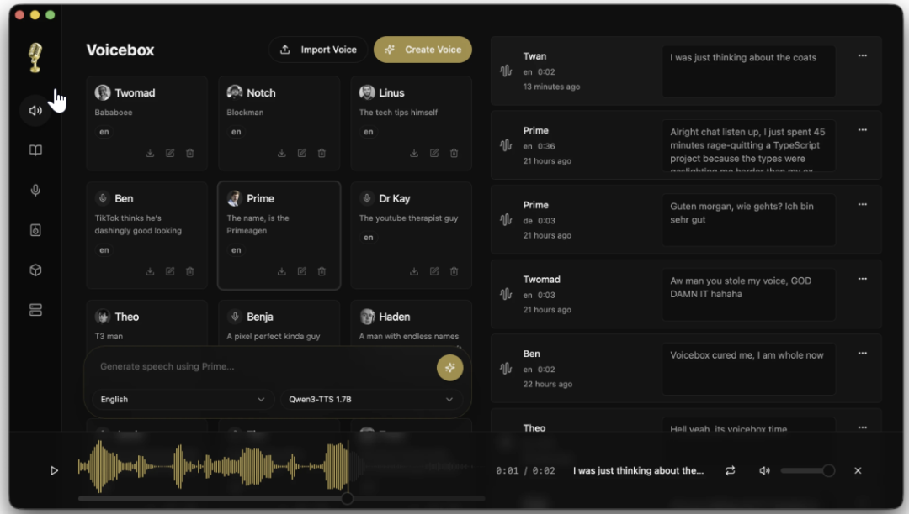
GitHub 上已获取 21K 个 Star。
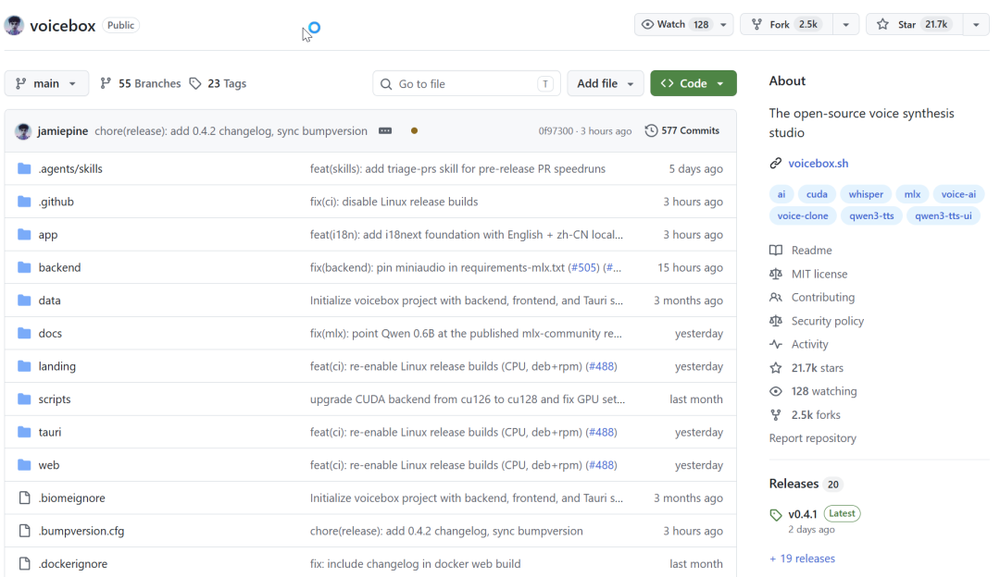
它是一个完全本地运行的语音克隆工作站，集成了 7 个 TTS 引擎，带多轨道编辑器，还有完整的 API——ElevenLabs 能做的事，它基本都能做，只不过全在你自己机器上跑，免费。
阿里巴巴开源的Qwen3-TTS 是主力引擎，有0.6B 和 1.7B 两个版本，支持 10 种语言，克隆质量很高，可以给它写"表演指令"，做有声书、做配音，这个是最佳选择。
想生成一点就选LuxTTS。只要 1GB 显存，CPU 上能跑到 150 倍实时速度，输出还是 48kHz 的高采样率。假设你只是想快速出个草稿听效果，就选这个就行了。
做全球的内容就用Chatterbox Multilingual 它有 23 种语言，阿拉伯语、芬兰语、斯瓦希里语这种小语种都支持。
Chatterbox Turbo 有点不一样。它只有 350M 参数，但能理解副语言标签——在文本里写 [laugh]、[sigh]、[gasp]，它真的会笑、叹气、倒吸一口气。输入框里敲 / 就能弹出标签选择器，做角色配音的时候特别好用。
要生成长时间的连续音频，就用TADA 这是一个更长的语音-语言模型，有1B 和 3B 两个版本，能生成 700 秒以上的连贯音频，时间戳精确到音素级别。
最后是Kokoro 是最小的那个，只有82M 参数，自带 50 个精选预设声音。对硬件要求最低。
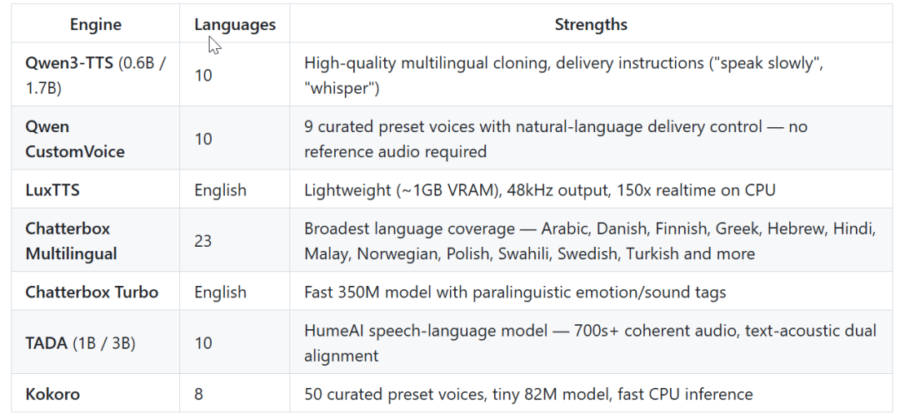
光有 TTS 引擎，好像也没有什么特别，那这个项目的差异到底在哪？
主要有3方面。
本地运行，数据不出设备。
现有大部分在线服务依赖云端 API，你的声音样本得上传。
Voicebox 采用完全本地化方案，所有推理、克隆、生成都你的机器上完成。macOS 上走 MLX/Metal，Apple Silicon 能快 4 到 5 倍；Windows 上走 CUDA，NVIDIA 显卡自动识别；AMD 和 Intel Arc 也都有对应的后端支持。
能做一整期播客。
大部分 TTS 工具的逻辑先输入文字，生成音频，就结束了。
但是做过语音内容的人知道，真正的麻烦不是生成一段话的语音，是把多段话拼成完整的内容。
要做一期两人对话的播客。你得先生成 A 的台词，再生成 B 的台词，然后拖进音频编辑软件里对时间轴、调音量、加过渡。一段 5 分钟的对话，光拼接可能就要折腾半小时。
Voicebox 的 Stories 编辑器是一个多轨道时间轴编辑器，长得有点像简化版的 DAW。你可以把不同声音的生成结果拖到不同轨道上，直接在时间轴上排列、修剪、分割，播放头会同步走，随时听效果。
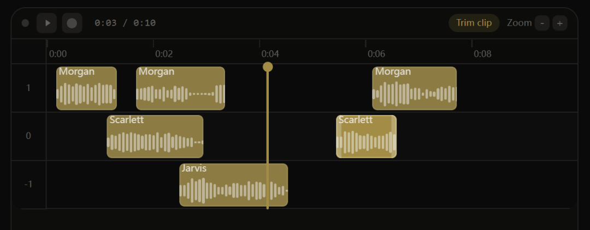
8 种后处理效果，不用切到 Audition
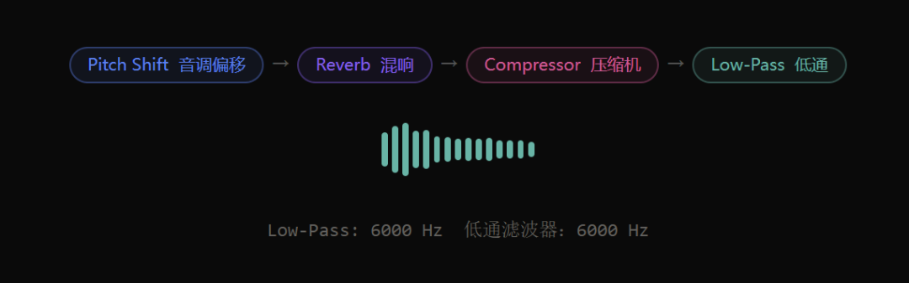
像音调偏移、混响、延迟、合唱/法兰、压缩、增益、高通滤波、低通滤波，都可以在生成音频后直接调整，背后用的是 Spotify 的 pedalboard 库，质量相当扎实，没的说。
还支持实时预览，调好参数后保存成预设。内置了 4 个预设，Robotic（机器人声）、Radio（收音机质感）、Echo Chamber（回声室）、Deep Voice（低沉嗓音），也可以自己创建。
效果也能绑定到声音档案上。比如你有一个"旁白"的档案，默认就带混响和压缩，每次用这个声音生成，效果自动带上，不用每次手动调。
官方给出的几个实际应用场景，覆盖了有声书制作、播客创作、视频配音等几大方向。
1）多角色有声书制作
输入不同角色的台词，为每个角色创建独立的声音档案，在 Stories 编辑器里排列时间轴，一键导出完整的有声书。
2）播客对话生成
两个人甚至多人的对话场景，每个声音独立轨道，支持实时预览和效果调整，5 分钟的对话内容，从生成到导出可能只需要 10 分钟。
3）视频配音与后期
生成的音频自带后处理效果，混响、压缩、音调调整一站式完成，不用再切到 Audition 或 Premiere 做二次处理。
安装也容易，5 分钟就能跑起来。
去官网 voicebox.sh 下载安装包。
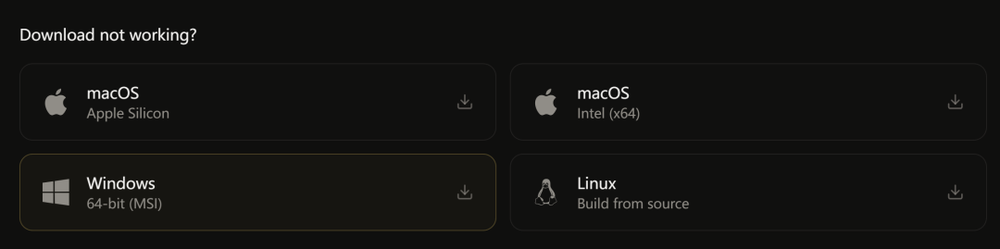
macOS 有 Apple Silicon 和 Intel 两个版本，Windows 是 MSI 安装包，也可以 Docker 一键启动：
git clone https://github.com/jamiepine/voicebox
cd voicebox
docker compose up
应用启动后，还不能输入文字用。要先把模型装好。先点界面右上角的立方体图标，进入模型管理页面。
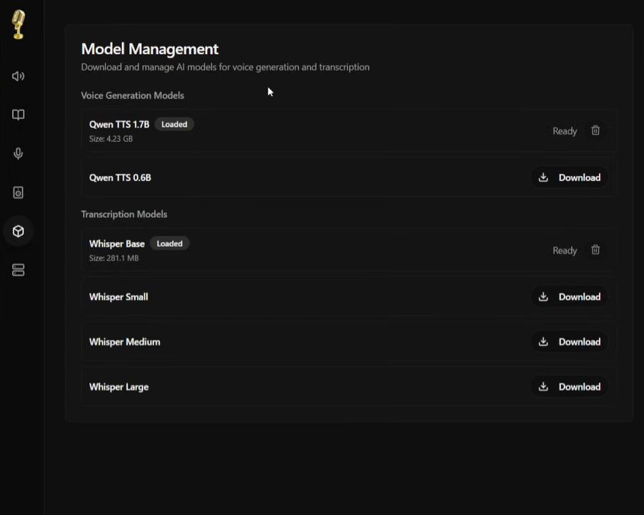
你会看到一串模型列表，不用全下。新手建议先下这两个。
选Qwen3-TTS的1.7B 版本，效果好。 还有一个Whisper Small用来克隆声音时用来转录样本。
第一次下载过程可能要几分钟。模型下载完，会自动加载，状态变成绿色就能用了。
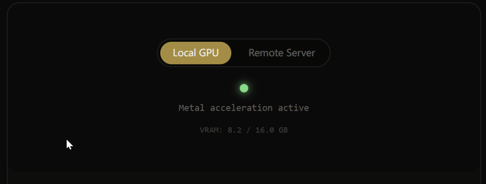
模型准备好了，创建声音档案。
点左侧的Profiles标签，再点一下右上角的"+"号。
有3种方式。
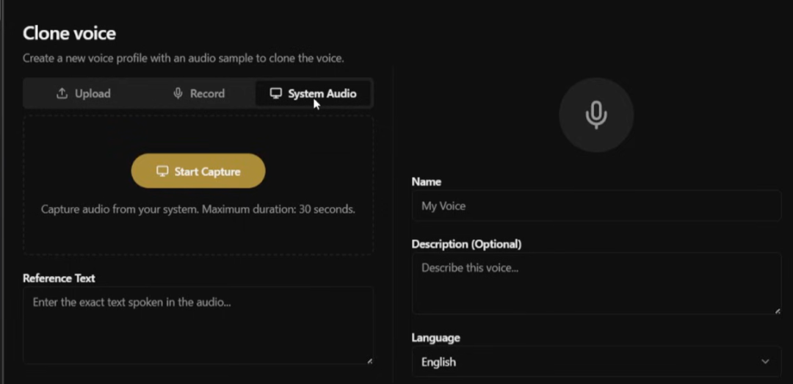
最方便的是直接拖一段 WAV 或 MP3 进去会自动上传。或者直接点录音按钮，对着麦克风说 10-20 秒就可以了。如果你正在看某个视频或播客，也可以直接从系统音频里截取。
最简单的方式就是直接录音。点录音按钮，用正常语速念一段话，比如："大家好，我是开源日记，今天要给大家分享一个很棒的开源项目voicebox。"
录完之后点保存，给档案起个名字，比如我的声音，后面要用到。
最后就可以生成语音了。
在主界面，在文本框里输入想生成的内容。如"欢迎收听今天的节目，我们一起来聊聊这个有趣的话题。"
下面。
选Qwen3-TTS引擎，语言就选中文，声音档案选择前面创建的我的声音。
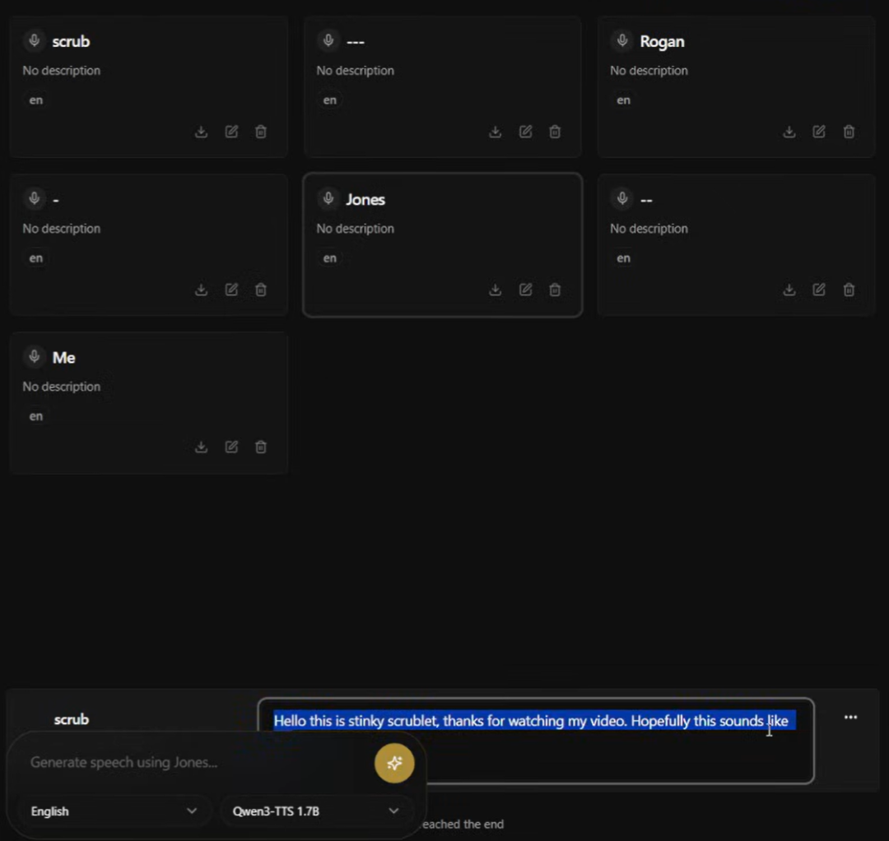
最后点"Generate"生成，等个几秒，音频就出来了。点播放按钮听听效果，不满意就换引擎重新生成。
就这么简单。没有命令行，没有配置文件。点几下鼠标，你的声音就克隆出来了。
想把它集成到自己的项目里，也支持，Voicebox 暴露了完整的 REST API。默认跑在 localhost:17493，生成语音、管理声音档案、查询状态都有接口。像看详细文档访问 localhost:17493/docs。
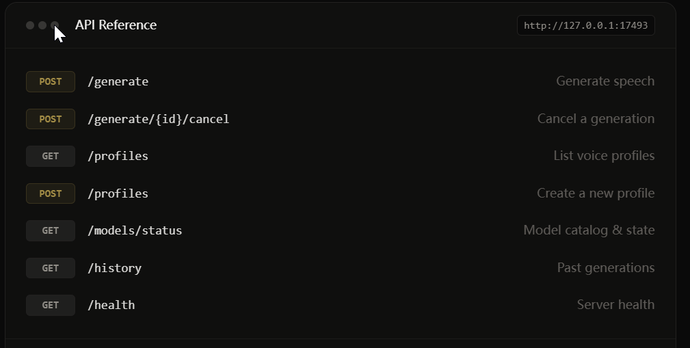
curl -X POST http://localhost:17493/generate \
-H "Content-Type: application/json" \
-d '{"text": "你好，这是Voicebox生成的语音", "profile_id": "你的档案ID", "language": "zh"}'
注意。
用CPU 也能跑但是很慢。想要流畅的体验还是需要用 GPU 加速。
推荐用macOS。用 MLX/Metal，Apple Silicon 能快 4 到 5 倍。
Linux 目前没有现成的安装包，得从源码编译，对不熟悉构建流程的人来说有点折腾。
最后说说
以前总觉得语音克隆那都是专业工作室才能干的事，现在随便一台普通电脑，就能把 VoiceBox 跑起来。以前还老担
心数据要传到云端不安全，现在全程离线就能搞定。
这才是开源的意义，不只是把价格打下来，而是把门槛也打下来。
项目基于 MIT 协议开源，可商用，也能二次开发。感兴趣的同学，可以去 GitHub 仓库看看。
项目地址：https://github.com/jamiepine/voicebox
既然看到这了，欢迎随手点赞，在看，转发，也可以给我个星标⭐，接收最新的文章，我们下期见！